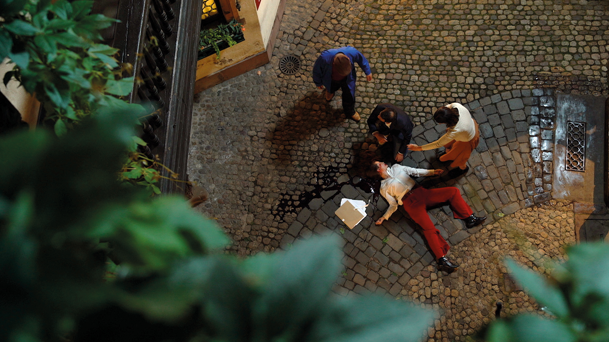

Murder at the Mauroide Museum
A shocking incident occurred at the prestigious Mauroide Museum yesterday evening when a murder took place within its hallowed halls. Visitors were left in disbelief as the tranquil atmosphere of the museum was shattered by this gruesome event.

The victim, identified as Professor Jonathan Smith, a renowned archaeologist, was found lifeless near the exhibit of ancient artifacts. The authorities have launched a full-scale investigation to unravel the mystery surrounding this heinous crime.

The Mauroide Museum, known for its extensive collection of historical artifacts and art, has been temporarily closed to the public as the police conduct their investigation. Museum staff are cooperating fully with the authorities to ensure a swift resolution to this tragedy.
Our thoughts go out to the family and friends of Professor Smith, and we will continue to provide updates on this developing story. The museum's reopening date will be announced once the investigation concludes, and security measures are put in place to prevent any future incidents.
If you have any information that could assist the police in their investigation, please contact the local authorities immediately. Your cooperation is essential in bringing the perpetrator to justice.
url of the museum : https://muséemauroide.com